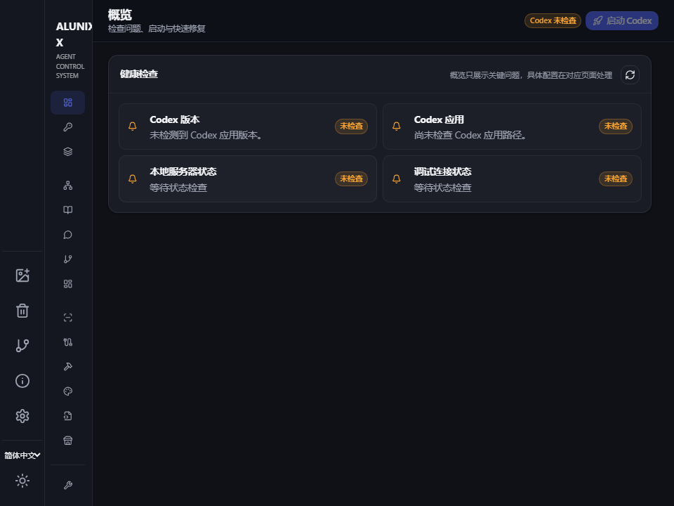
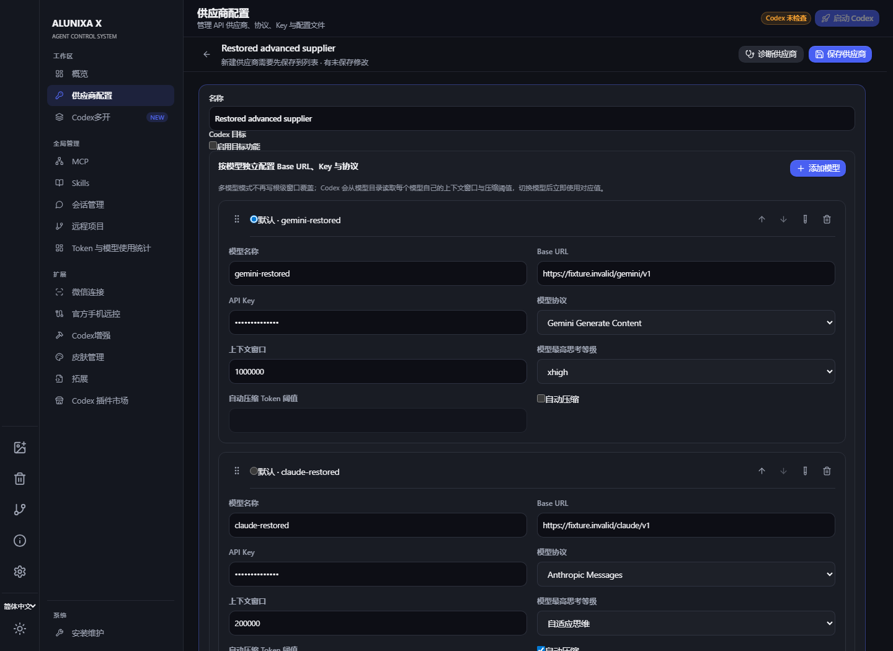
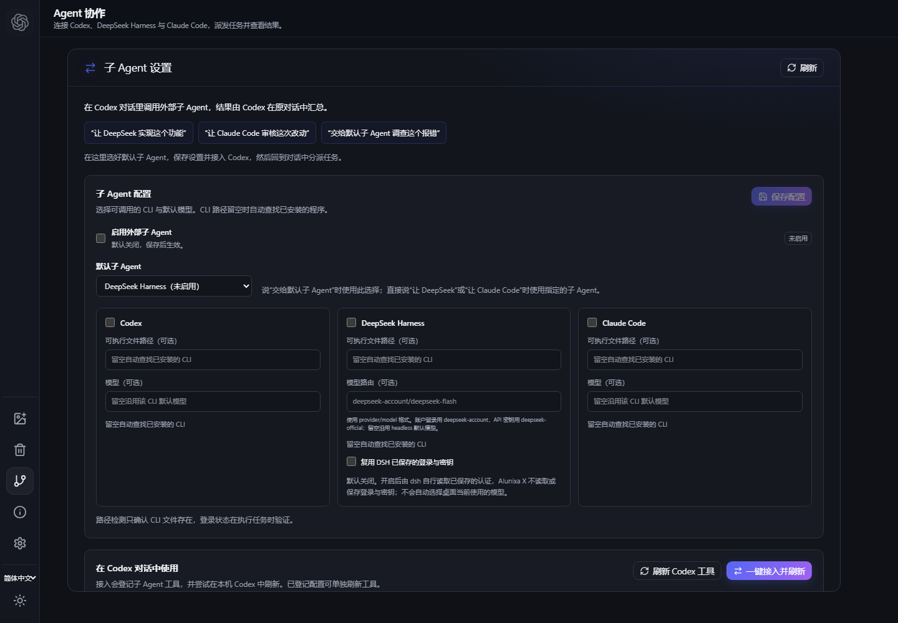
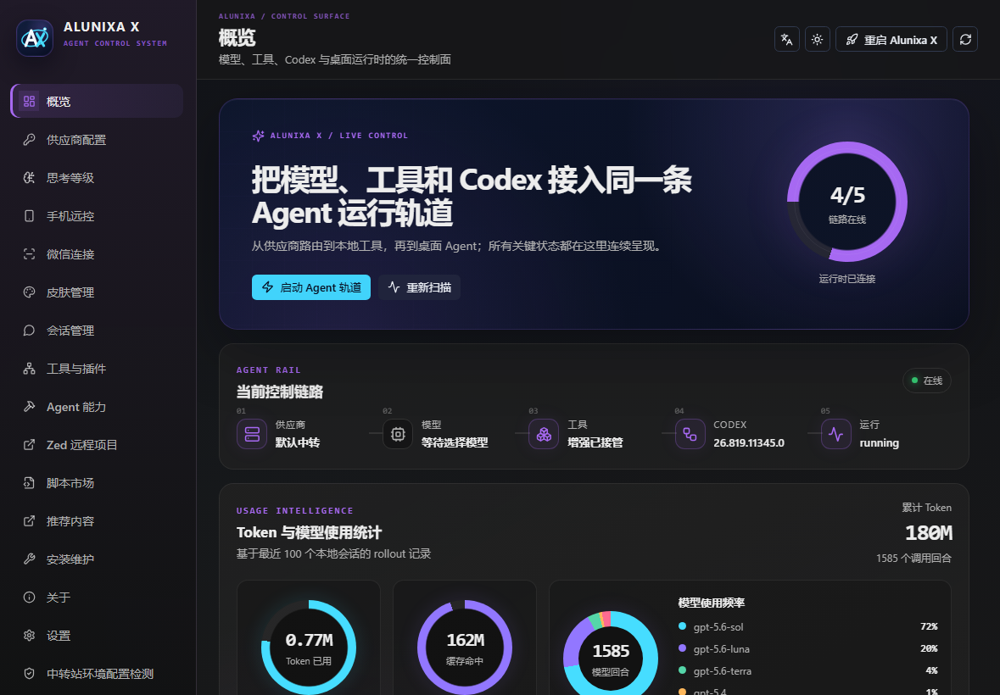

供应商自由切换
官方登录、官方登录 + API、纯 API 与聚合供应商，选择适合自己的模型请求方式。
- Responses / Chat Completions
- 模型测试与 Provider Doctor
一个管理工具，覆盖完整工作流
Alunixa X 通过 CDP 与本地辅助服务提供供应商切换、协议转换、会话管理和界面增强，每项增强都可以按需开关。
官方登录、官方登录 + API、纯 API 与聚合供应商，选择适合自己的模型请求方式。
按模型设置上下文窗口与自动压缩阈值，支持模型元数据导入，未指定后缀时沿用供应商级配置。
本地会话扫描、删除与撤销、批量管理、Markdown 导出和 Token 历史，整理会话更方便。
浏览与管理社区用户脚本，按需添加模型选择、用量统计等能力，也可以编写自己的脚本。
语音输入、粘贴修复、下一步建议与回答大纲，让输入和阅读更流畅。
用量挂件、可更换的桌宠角色、任务状态和预算提醒，搭配皮肤与自定义图片。
微信连接支持扫码连接本机 Codex，每个联系人映射到独立会话，并可配置允许访问的微信用户。
Alunixa X 管理工具真实界面
在管理工具中集中配置，在 Codex 内直接使用。模型列表、会话操作、输入行为和阅读布局，都可以按自己的习惯开关。



这里的「拓展」是 Alunixa X 用户脚本，与 Codex 官方插件市场是两个入口。社区脚本的服务配置和使用要求以各自说明为准。 用户脚本开发说明 ↗

挂件与桌宠截图来自开发版本，正式发布后的开启方式与统计口径以版本说明为准。 用量挂件说明 ↗ 原始功能、鲸鱼角色及内置素材来自 MeteorNOX/DeepSeek-Balance-Whale-Widget。
第一次使用
先安装官方 Codex / ChatGPT 桌面应用，再下载 Windows 安装程序或 macOS 通用 DMG。
打开管理工具，确认 Codex 路径，再设置供应商和需要的增强。
以后从 Alunixa X 入口启动，已保存的配置会自动加载。依赖注入脚本的设置通常需要保存后重启。
供应商与模型
使用 ChatGPT / Codex 官方账号。
保留官方登录状态与插件入口，模型请求始终走配置的兼容 API，不消耗官方额度。
使用自定义 Base URL / Key，无需官方账号。
在多个 API 供应商之间故障转移，或按会话、请求、权重轮转。
官方登录 + API 不会先用官方额度再切 API。Chat Completions 供应商可通过本地代理转换为 Codex 使用的 Responses 协议。
在模型列表中使用窗口后缀，支持 1M、200K 或纯数字。请按实际供应商能力填写；未指定后缀的模型继续使用供应商级上下文配置。
deepseek-v4-pro[1M]
your-model[200K]
another-model[128000]下载 Alunixa X
当前稳定版 GitHub 最新发布。安装包由 GitHub Actions 从公开源码自动构建。
Windows 10 / 11 · x64
包含 Alunixa X 启动器和管理工具，并创建桌面与开始菜单入口。
macOS · Apple Silicon / Intel
一个 DMG 同时支持 Apple Silicon 与 Intel Mac，安装到 Applications 即可。
透明边界
不修改 Codex 的 app.asar，不向官方应用安装目录写入补丁文件。
供应商密钥保存在本地配置边界中，不上传到 Alunixa X 项目或广告服务。
界面增强既有单项开关，也有总开关；关闭后仍可只使用供应商与启动管理。
源码、Issue、发布记录和安装包构建工作流都可以在 GitHub 查阅。
常见问题
不是。Alunixa X 是社区维护的开源外部启动器与管理工具，面向 OpenAI Codex / ChatGPT 桌面应用使用。
“Alunixa X”用于日常静默启动并加载配置；“Alunixa X 管理工具”用于管理供应商、增强、脚本、更新和诊断。
可以。选择官方登录模式即可只使用 ChatGPT / Codex 官方账号，Alunixa X 也能仅作为启动和增强管理工具。
确认从 Alunixa X 入口启动。在管理工具的「安装维护」与「关于」页面检查应用路径、启动状态和诊断日志。
先在供应商详情中运行模型测试或 Provider Doctor，确认协议、Base URL、Key 与模型匹配。提交反馈前请隐藏密钥与认证信息。
可以分别关闭，也可以关闭增强总开关。Alunixa X 依赖官方应用的页面结构、CDP 和本地数据格式；官方更新后，部分功能可能需要跟随适配。修改供应商配置或会话数据前，请保留备份。
交流与支持
欢迎反馈问题、分享拓展、主题和使用经验。提交 Issue 时，请附上系统、Alunixa X 版本、复现步骤与已脱敏的日志。